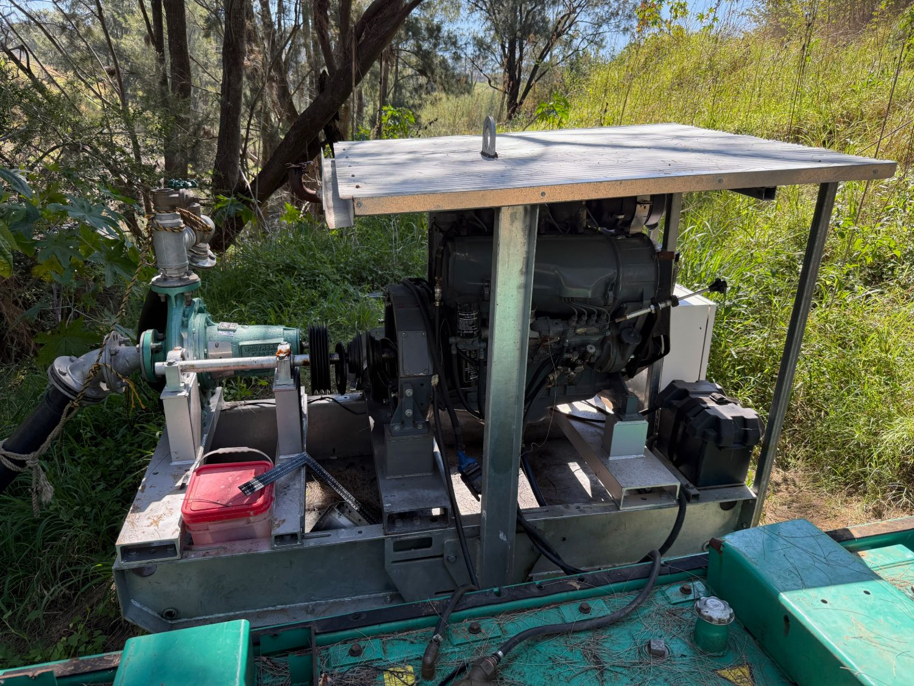
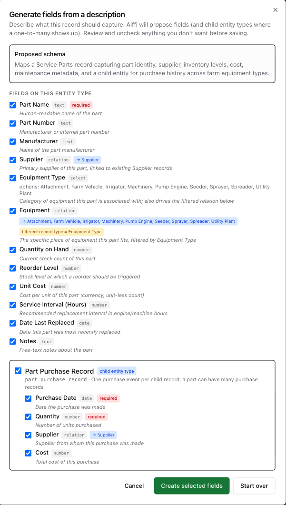

When the water stops
Anyone who irrigates knows the feeling. The pump is running, the water should be moving, and then it isn’t. On our creek pump the culprit was simple: the V-belts between the diesel and the Southern Cross pump had given up.
The drive is a multi-groove pulley running a matched set of B-section belts. When one goes, you replace the lot — and until you do, nothing gets watered.

So it was into town to Motion Australia at Beresfield for a set of six B50FEN V-belts. Belts fitted, pump running again, water back on.
Driving home with the invoice on the seat, the obvious question came up: why don’t we have a record of this? Which belts does that pump take? When did we last change them? How many spares are in the shed? Who did we buy them from, and what did they cost? Next time it happens we shouldn’t be crawling under the pump reading part numbers off a worn belt.
So we decided to track service parts and inventory in Farmers Friend. And rather than build forms, we just asked Alffi.
Step 1 — Describe it, and let Alffi build the entity
Farmers Friend lets you create your own record types. Instead of adding fields one at a time, we described what we wanted in plain English:
A service part record for farm equipment maintenance. Capture: part name, part number, manufacturer, supplier, equipment type as a dropdown (Attachment, Farm Vehicle, Irrigator, Machinery, Pump Engine, Seeder, Sprayer, Spreader, Utility Plant), the specific equipment it fits, quantity on hand, reorder level, unit cost, service interval in hours, date last replaced, and notes. Each part can have many purchase records (date, quantity, supplier, cost).
Alffi came back with a proposed schema to review before anything was saved:
- A Service Part entity with part name, part number, manufacturer, stock on hand, reorder level, unit cost, service interval (hours), date last replaced and notes.
- A Supplier relation linked to our existing Supplier records — not a free-text box.
- An Equipment Type dropdown with exactly the nine options we listed.
- A filtered Equipment relation — pick “Pump Engine” and you only see pump engines. Alffi worked that out on its own.
- A Part Purchase Record child entity because it spotted the one-to-many: one part, many purchases, each with date, quantity, supplier and cost.
Every field had a checkbox. We looked it over, kept the lot, and hit Create selected fields. A complete inventory structure in under a minute.

Step 2 — Set up the supplier from the invoice
Next we dropped the Motion tax invoice PDF into the conversation and asked Alffi to set Motion up as a supplier.
Set up Motion as a supplier.
Before we get into it — has the kill sheet come back from AD Meats yet for the batch dispatched on 21 September? It’s due by 5 October.
On to Motion — no Motion record exists yet, so I’ll create one. The invoice gives me their name and ABN, but the Supplier type requires address, suburb, postcode, state and phone — none of which are on the invoice. Could you give me those?
Unit 1, 2 Canavan Drive, Beresfield, NSW 2322
phone 02 4968 4000
All six required fields are covered. The card is ready to review — approve it to save the record.
- Supplier Name
- Motion Australia Pty Ltd
- Address
- Unit 1, 2 Canavan Drive
- Suburb
- Beresfield
- Post Code
- 2322
- State
- NSW
- Phone
- 02 4968 4000
Two things stood out. First, Alffi checked for an existing Motion record before creating a duplicate. Second, it wouldn’t guess — the invoice didn’t have the address or phone, so it asked. And it still found time to remind us about an overdue kill sheet from a completely different part of the farm.
Step 3 — Record the invoice
OK record the invoice
The B50FEN part is already in your catalogue. I’ll add a Part Purchase Record under it: 6 × B50FEN V-belts from Motion Australia Pty Ltd, 25 Sep 2026, $83.46 ex GST.
The $1.10 credit card surcharge is a fee, not a part — want me to record that as a cost against the pump engine, or skip it?
- Purchase Date
- 2026-09-25
- Quantity
- 6
- Supplier
- Motion Australia Pty Ltd
- Cost
- $83.46
Alffi read the line items off the PDF, matched part number B50FEN to the part already in our catalogue, linked the purchase to the supplier it had just created, and set the credit card surcharge aside instead of pretending it was a part.
What we have now
Next time the belts go on the creek pump, we won’t be reading numbers off a shredded belt. We’ll open the pump engine in Farmers Friend, see B50FEN, see how many are on the shelf, and see who we bought them from last time and what they cost.
A broken belt cost us an afternoon. Setting up the whole service-parts system cost us three messages.
Try it on your own farm
Describe what you want to track and let Alffi build it for you.
Download Farmers Friend See all features